Need the disc archive? Visit the official download center.
Characters
DEV NOTE: Saturn magazine scans, disc text, and memory-card notes are still being sorted out.
Lux
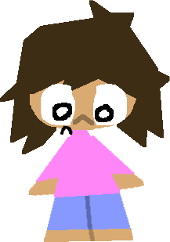
| Name | Lux |
| HP | 100 |
| Role | Survivor |
| Release | Launch Disc |
[Dialog removed by moderator]
Overview: Lux is a small child trapped inside PARTY CRASHERS after entering through a dream.
Lore: Lux believes this world is not real and holds onto the idea that escape is possible someday.
[EDIT NOTE: this is incorrect]
[EDIT NOTE REMOVED BY ADMIN]
[EDIT NOTE: stop changing this]
- Dash: A boost that makes Lux fly forward, if the killer is put in their path, deal 25 HP and stun for 3 seconds.
- Cover: Stands still and cowers in fear. If attacked during this peirod, stun for 3 seconds and deal 25 HP.
Last Man Standing Theme
Toko
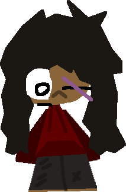
| Name | Toko |
| HP | 150 |
| Role | Fighter |
| Release | Launch Disc |
"I'm not afraid of you!"
Overview: Toko is yet another character that is stuck in PARTY CRASHERS. Unlike Lux, he is not afraid of the dangers that are here...
Lore: Instead of hoping for escape, Toko focuses on finding flaws of this dream and fighting their way out.
- Slash: Toko will stand still and charge up a Slash. Once used, stun for 5 seconds and deal 50 HP if hit.
- Parry: Similar to Lux’s cower move, Toko will stand still and block any attacks for 4 seconds.
- (PASSIVE) Bleed: Due to the scars on Toko, he will constantly take tick damage. Make sure you have a Medic on your team, or you wont survive.
Medic
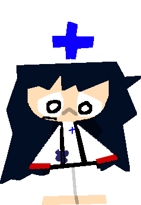
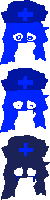
| Name | Medic |
| HP | 100 |
| Role | Support |
| Release | Launch Disc |
"Where...am...I?"
Overview: Medic is a vessel in PARTY CRASHERS that keeps others alive using heals, relying on speed and awareness rather than combat.
- Heal: Heals other survivors near you. If hit during this peirod, deal 2X damage.
- Self Heal: Heals yourself up to 45 HP. If hit during this peirod, deal 2X damage.
- (PASSIVE) Terrified: Medic has lower cooldowns and has a faster walk speed, but takes 1.15X Damage.
Last Man Standing Theme
Astra
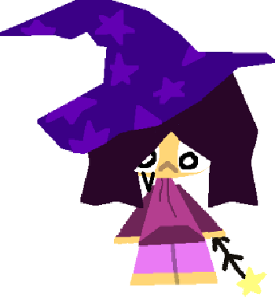
| Name | Astra |
| HP | 90 |
| Role | Fighter |
| Release | Rev A / Rev B |
Overview: Astra is a fighter who controls match tempo by shortening the game clock and teleporting to chosen positions, using stuns to create openings and disrupt opponents.
Lore: Astra watches the flow of time more closely than anyone else, and fights only to delay what happens when it finally runs out.
- Timewarp: When a meter fills up, Astra will shorten the clock by 30 seconds. This meter can be filled by hitting stuns.
- Wandbang: This ability will teleport you where you click, if hit on killer, stun for 3 seconds.
Runi
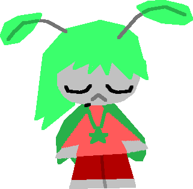
| Name | Runi |
| HP | 100 |
| Role | Survivor |
| Release | V2 |
Overview: Runi will be a character that uses flight and invisibillity to get away from the killer.
Lore: Not much is known about Runi, and how they got here.
- Cover: Runi will cover themselves with their wings, causing them to be invisible to the killer.
- Flight: Runi will fly upward and dodge any attacks for the tim(double-u) they are flying.
- (PASSIVE) Flutter Runi will have lower gravity than anyone else.
NULL AND VOID
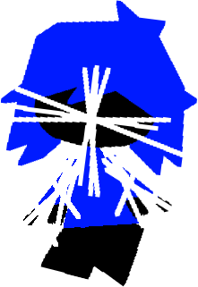
| Name | Lux(?) |
| HP | 800 |
| Role | Sole Survivor |
| Release | Rev A / Rev B |
"R0VUIE1FIE9VVCBPRiBIRVJF"
Overview: Null And Void (or N&V) is what happens after someone uses the LIGHTSHARDS, the one seen here is Lux.
Lore: Lux stole the LIGHTSHARDS for theirself, in hopes that they could use them to escape. Little do they know that [info removed.]
- Ultradash: A boost that makes Lux fly forward, if the killer is put in their path, deal 75 HP and stun for 6 seconds.
- Parry: Parries any attack dealt to them for 4 seconds. If attacked during this peirod, stun for 7 seconds and deal 100 HP.
- Fight: A simple punch that deals 90 HP and stuns for 3 seconds if hit.
Last Man Standing Theme
Killers
Evil Lux
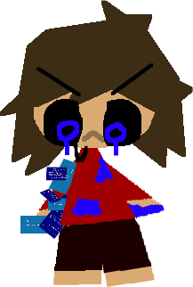
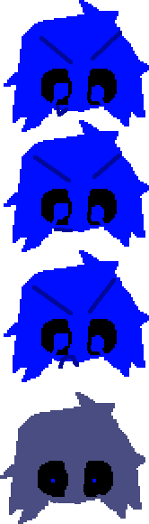
| Name | Lux |
| HP | 100 |
| Role | Survivor |
| Release | Launch Disc |
That almost stung!
Overview: Evil lux (also known as 404) is an EVIL version of Lux that hunts down players and kills them, causing the game to reset once more.
Lore: Not much is known about this guy. Some believe he is a creation of the dream, others believe he is just a joke character, yet nothing has been directly stated by developers.
- M1: Hits any player for 25 HP.
- Beatdown: Rushes foward and attacks anyone in his path for 40 HP.
- Self Regen: Stands still and regenerates for 5 seconds. During this time, any stuns deal twice the damage.
- Peekaboo: Teleports behind a random survivor.
Dev Characters
Blux

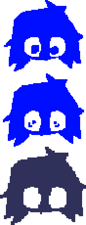
| Name | Blux |
| HP | 1500 |
| Role | Survivor |
| Release | N/A |
"I'm Blue!"
Overview: This is a developer only character used to test the juggernaut mode.
Lore:
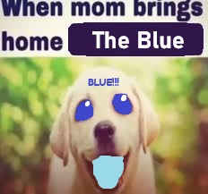
- Ability 1 (Name Unknown) Blux will fly around the map and flash black and white.
- Ability 2 (Name Unknown) Blux will glow green and heal himself around 500 HP.
Rux
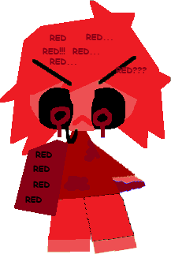
| Name | Rux |
| HP | 25500 |
| Role | Killer |
| Release | N/A |
"I'm Red..."
Overview: This is a developer only character. Hes very red, are you?
Lore:
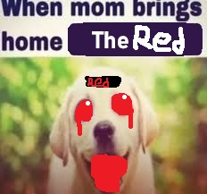
- M1: Hits any player for 255 HP.
- Beatdown: Rushes foward and attacks anyone in his path for 90 HP.
- Self Regen: Stands still and regenerates for 0.3 seconds. During this time, any stuns deal twice the damage.
- Peekaboo: Teleports behind a random survivor.
Skins
Overview: Skins are cosmetic variants for characters. This section lists known skins and how to unlock them. Saturn save data stores unlocked skins per memory block, and several costumes only appear after clearing Arcade or Last Man Standing with specific characters. Early Japanese strategy guides also note that some costume flags do not display correctly unless a Backup RAM Cartridge is present.
Lux
Default
Common 0 Chips
Christopher Smallshorts
Rare 1000 Chips
Legacy Lux
Common 500 Chips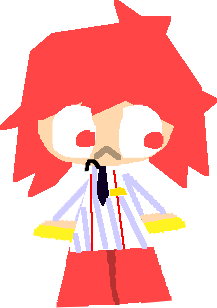
Teto
Rare 3500 Chips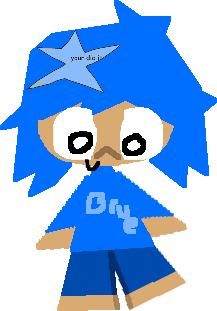
Blux Cosplay
Super-Duper-Rare 40000 ChipsToko
Default
Common 0 ChipsMedic
Default
Common 0 Chips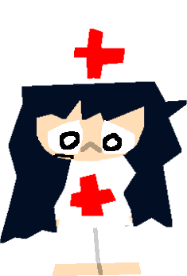
Legacy Medic
Common 500 Chips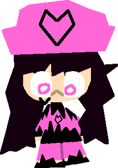
Final Destination
Really-Rare 5000 ChipsAstra
Default
Common 0 ChipsRuni
Default
Common 0 ChipsNULL&VOID
Default
Common 0 ChipsEvil Lux
Default
Commom 0 Chips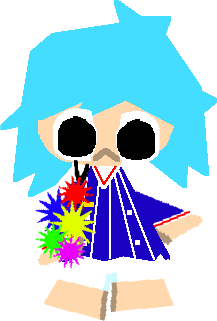
Mesmerized
Rare 4000 Chips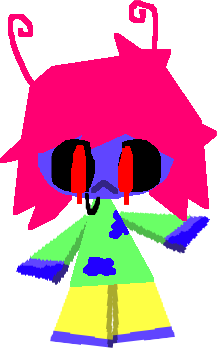
Jimmy BigPants
Rare 2000 ChipsGame Modes
Overview: Modes define win conditions, round length, and special rules. The Saturn port keeps the arcade-style menu names shown on the back of the box.
- Classic: Standard round with one killer and multiple survivors. This is the default Saturn mode and the one used for most memory-card records.
- Juggernaut: A single ultra-strong survivor faces 8 killers. On Saturn this mode unlocks after clearing Classic five times.
- Sudden Death: A faster ruleset with shortened timers, reduced healing, and more aggressive spawn tables.
- Last Man Standing: A special late-round state with unique music and alternate UI colors on Saturn hardware.
Map List
Overview: Known arenas and notable hazards or mechanics.
| Thumbnail | Map | Layout Notes | Hazards / Mechanics |
|---|---|---|---|
| Dream Arcade | Large central floor with narrow machine aisles. Saturn players remember the parallax floor reflections here. | Flickering cabinet lights, looping announcement audio, and several blind corner ambush routes. | |
| Glass Hall | Open lanes with long sightlines. Strong for ranged pressure and weak for slow supports. The Saturn build is especially known for its reflective floor shimmer here. | Breakable panels and mirrored walls that make killer silhouettes hard to read on CRTs. |
Revision History
Overview: Saturn copies are usually identified by disc revision rather than downloadable patches. Collectors also distinguish between the early longbox promo print, the standard jewel-case retail issue, and the later reprint with the Rev B disc.
- Rev A (November 27, 1997): Launch disc. Includes the original menu font, slower round transitions, and the earliest Last Man Standing audio mix.
- Rev B (March 12, 1998): Reprint revision. Reduced loading between scenes, adjusted Lux dash hit detection, corrected several text errors in survivor bios, and cleaned up controller detection for the 3D Pad.
- NetLink Promo Demo: Rare sampler build with a trimmed character roster, an alternate title screen logo, and a shorter attract sequence intended for kiosk units.
- Magazine Trial Disc: A cut-down preview build distributed through import coverage, recognizable by its unfinished announcer clips and missing skin descriptions.
Saturn Release
Overview: PARTY CRASHERS released on Sega Saturn as a single-disc action game with memory backup support, optional 3D Control Pad movement, and a later revision that reduced load pauses between rounds. It is usually grouped with late-era Saturn action titles because of its dithered lighting, dramatic transparency effects, and unusually dark horror presentation.
| Item | Details |
|---|---|
| Platform | Sega Saturn |
| Japanese Release | November 27, 1997 |
| North American Release | March 18, 1998 |
| Media | 1 CD-ROM |
| Save Support | Internal Memory and Backup RAM Cartridge |
| Controller Notes | Standard Pad supported. 3D Control Pad enables smoother survivor movement and slightly finer turning during chase scenes. |
| Display Modes | 240p gameplay with interlaced menu screens, plus optional screen position adjustment from the options menu. |
| Audio Notes | Red Book CD audio is used for themes, while voice clips and alerts are handled through Saturn PCM playback. |
| Visual Notes | The Saturn build is known for heavy dithering, transparent shadow layers, pre-rendered attract screens, and the animated menu backgrounds in Last Man Standing. |
| Packaging | Japanese copies include a monochrome instruction booklet, while North American copies are known for the back-cover screenshots taken from an early preview build. |